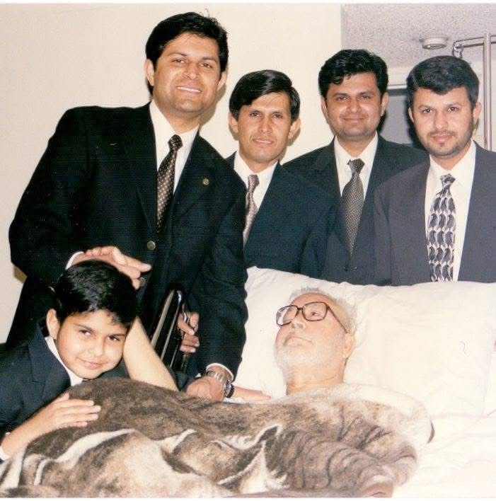
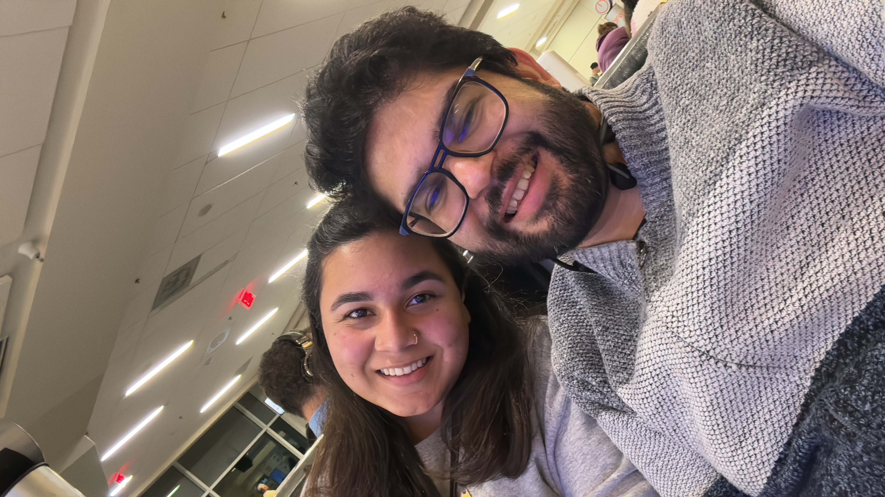

A LIFE OF WORK, SERVICE & COMMUNITY
GROWING UP
I was raised in Newark, California, a working- and middle-class suburb in the San Francisco Bay Area. After my father suffered multiple strokes and became paralyzed, I was largely raised by my older brothers in a multi-family household.
From them, and from my father's example as a chemistry professor and student advocate, I learned the value of education, civic engagement, and standing up for what you believe in.
Growing up during the tech boom and bust, the aftermath of 9/11 as a South Asian Muslim student, and graduating high school during the 2008 financial crisis shaped my understanding of economic instability, social responsibility, and the importance of strong communities.

WORK & ECONOMIC REALITY
I began working before I turned 16 and have spent over two decades working across fast food, retail, hospitality, consumer electronics, technology manufacturing, and corporate technology environments. These experiences shaped my belief that government should work for everyone — not just those with access and privilege.
In 2014, my family moved to Central Texas due to the rising cost of living in the Bay Area. I attended Texas State University's McCoy College of Business, earning my Bachelor of Business Administration in Economics in 2017.
CAREER & CIVIC LIFE
I built a career in the technology sector as a New Product Program Manager. During the COVID-19 pandemic, I remained civically engaged and served as a delegate representing Williamson County at the Texas Democratic Party Convention.
In 2024, I lost my job in the tech sector and spent eight months unemployed. That experience showed me how quickly stability can disappear for working families and reinforced my belief that we need leadership that understands real economic pressure in an era of automation and rapid economic change.
In 2025, I joined Sam's Club in South Austin as a Sales and Training Manager, where I worked alongside hardworking people navigating real economic and social challenges every day.
SERVICE, FAITH & COMMUNITY
In Central Texas, I became deeply involved in civic engagement, serving as a Volunteer Deputy Voter Registrar, precinct chair, and campaign volunteer. I have also worked in community outreach and census organizing, helping connect underrepresented communities to civic participation.
From 2022 to 2024, I served as Social Committee Chair at the Islamic Ahlul Bayt Association, helping organize community and youth programming. Since 2022, I have also helped organize the Capital of Texas Shab-e-Aza, a youth-led cultural and community event bringing together young people from across Texas.
WHY I'M RUNNING
In 2020, my wife and I were married during the height of the pandemic in an intimate ceremony attended virtually by family and friends. In 2022, we purchased our home in Hutto to build our future here.
On January 14, we welcomed our son, Ziyan Abbas. Becoming a father has deepened my commitment to building a stronger future for Hutto families.
After conversations with mentors, friends, and community members, I answered my call to public service and officially filed to run for Hutto City Council shortly after my 35th birthday.
